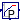

Package with models for discrete time controls
Extends from Modelica.Icons.Package (Icon for standard packages).
| Name | Description |
|---|---|
|  LimPID | P, PI, PD, and PID controller with limited output, anti-windup compensation and setpoint weighting |
| Outputs the number of signals that are above/below a certain threshold | |
| Records the time since the input changed to false | |
| PID controller with anti-windup, output limiter and output hysteresis | |
| PID controller with anti-windup, hysteresis and timer to prevent short cycling | |
| Ranks output signals such that y[i] >= y[i+1] | |
| Collection of models that illustrate model use and test models |
 Buildings.Controls.Continuous.LimPID
Buildings.Controls.Continuous.LimPID
P, PI, PD, and PID controller with limited output, anti-windup compensation and setpoint weighting

This model is identical to Modelica.Blocks.Continuous.LimPID except that it can be configured to have a reverse action.
If the parameter reverseAction=false (the default),
then u_m < u_s increases the controller output,
otherwise the controller output is decreased.
Thus,
reverseAction = false,
reverseAction = true.
Extends from Modelica.Blocks.Continuous.LimPID (P, PI, PD, and PID controller with limited output, anti-windup compensation and setpoint weighting).
| Type | Name | Default | Description |
|---|---|---|---|
| SimpleController | controllerType | .Modelica.Blocks.Types.Simpl... | Type of controller |
| Real | k | 1 | Gain of controller [1] |
| Time | Ti | 0.5 | Time constant of Integrator block [s] |
| Time | Td | 0.1 | Time constant of Derivative block [s] |
| Real | yMax | 1 | Upper limit of output |
| Real | yMin | 0 | Lower limit of output |
| Real | wp | 1 | Set-point weight for Proportional block (0..1) |
| Real | wd | 0 | Set-point weight for Derivative block (0..1) |
| Real | Ni | 0.9 | Ni*Ti is time constant of anti-windup compensation |
| Real | Nd | 10 | The higher Nd, the more ideal the derivative block |
| Boolean | reverseAction | false | Set to true for throttling the water flow rate through a cooling coil controller |
| Initialization | |||
| InitPID | initType | .Modelica.Blocks.Types.InitP... | Type of initialization (1: no init, 2: steady state, 3: initial state, 4: initial output) |
| Boolean | limitsAtInit | true | = false, if limits are ignored during initialization |
| Real | xi_start | 0 | Initial or guess value value for integrator output (= integrator state) |
| Real | xd_start | 0 | Initial or guess value for state of derivative block |
| Real | y_start | 0 | Initial value of output |
| Advanced | |||
| Boolean | strict | false | = true, if strict limits with noEvent(..) |
| Type | Name | Description |
|---|---|---|
| input RealInput | u_s | Connector of setpoint input signal |
| input RealInput | u_m | Connector of measurement input signal |
| output RealOutput | y | Connector of actuator output signal |
 Buildings.Controls.Continuous.NumberOfRequests
Buildings.Controls.Continuous.NumberOfRequests
Outputs the number of signals that are above/below a certain threshold

Block that outputs the number of inputs that exceed a threshold.
The parameter kind is used to determine the kind of the
inequality. The table below shows the allowed settings.
Value of parameter kind |
Output signal incremented by 1 for each i ∈ {1, ..., nin} if |
|---|---|
| 0 | u[i] > threShold |
| 1 | u[i] ≥ threShold |
| 2 | u[i] ≤ threShold |
| 3 | u[i] < threShold |
This model may be used to check how many rooms exceed a temperature threshold.
Extends from Modelica.Blocks.Icons.Block (Basic graphical layout of input/output block).
| Type | Name | Default | Description |
|---|---|---|---|
| Integer | nin | Number of inputs | |
| Real | threShold | 0 | Threshold |
| Integer | kind | Set to 0 for u>threShold, to 1 for >=, to 2 for <= or to 3 for < |
| Type | Name | Description |
|---|---|---|
| output IntegerOutput | y | Number of input signals that violate the threshold |
| input RealInput | u[nin] | Input signals |
 Buildings.Controls.Continuous.OffTimer
Buildings.Controls.Continuous.OffTimer
Records the time since the input changed to false

Block that records the time that has elapsed since its input signal switched to false.
At the beginning of the simulation, this block outputs the time that has elapsed since the start of the simulation. Afterwards, whenever its input switches to false, the timer is reset.
Extends from Modelica.Blocks.Interfaces.partialBooleanBlockIcon (This icon will be removed in future Modelica versions, use Modelica.Blocks.Icons.PartialBooleanBlock instead.).
| Type | Name | Description |
|---|---|---|
| input BooleanInput | u | Connector of Boolean input signal |
| output RealOutput | y | Connector of Real output signal |
 Buildings.Controls.Continuous.PIDHysteresis
Buildings.Controls.Continuous.PIDHysteresis
PID controller with anti-windup, output limiter and output hysteresis

Block of a controller for set point tracking with a hysteresis element that switches the controller on and off.
If the controller is off, and the control error becomes larger than eOn, then
the controller switches to on and remains on until the control error is smaller than eOff.
When the controller is on, the set point tracking can be done using a P-, PI-, or PID-controller.
In its off-mode, the control output is zero. Thus, the parameters yMin and yMax are
used to constrain the output of the controller during its on mode only. This can be used, for
example, to modulate a device between 0.3 and 1.0, and switch it to off when the control error
is small enough.
Extends from Modelica.Blocks.Interfaces.SVcontrol (Single-Variable continuous controller).
| Type | Name | Default | Description |
|---|---|---|---|
| Hysteresis | |||
| Real | eOn | 1 | if off and control error > eOn, switch to set point tracking |
| Real | eOff | -eOn | if on and control error < eOff, set y=0 |
| Boolean | pre_y_start | false | Value of hysteresis output at initial time |
| Set point tracking | |||
| SimpleController | controllerType | Modelica.Blocks.Types.Simple... | Type of controller |
| Real | k | 1 | Gain of controller |
| Time | Ti | Time constant of Integrator block [s] | |
| Time | Td | Time constant of Derivative block [s] | |
| Real | yMax | 1 | Upper limit of output |
| Real | yMin | 0 | Lower limit of output |
| Real | wp | 1 | Set-point weight for Proportional block (0..1) |
| Real | wd | 0 | Set-point weight for Derivative block (0..1) |
| Real | Ni | 0.9 | Ni*Ti is time constant of anti-windup compensation |
| Real | Nd | 10 | The higher Nd, the more ideal the derivative block |
| Boolean | reverseAction | false | Set to true to enable reverse action (such as for a cooling coil controller) |
| Initialization | |||
| InitPID | initType | Modelica.Blocks.Types.InitPI... | Type of initialization (1: no init, 2: steady state, 3: initial state, 4: initial output) |
| Boolean | limitsAtInit | true | = false, if limits are ignored during initializiation |
| Real | xi_start | 0 | Initial or guess value value for integrator output (= integrator state) |
| Real | xd_start | 0 | Initial or guess value for state of derivative block |
| Real | y_start | 0 | Initial value of output |
| Type | Name | Description |
|---|---|---|
| input RealInput | u_s | Connector of setpoint input signal |
| input RealInput | u_m | Connector of measurement input signal |
| output RealOutput | y | Connector of actuator output signal |
 Buildings.Controls.Continuous.PIDHysteresisTimer
Buildings.Controls.Continuous.PIDHysteresisTimer
PID controller with anti-windup, hysteresis and timer to prevent short cycling

Block of a controller for set point tracking with a hysteresis element that switches the controller on and off, and a timer that prevents the controller to short cycle.
The controller is similar to
Buildings.Controls.Continuous.PIDHysteresis but in addition,
it has a timer that prevents the controller from switching to on
too fast. When the controller switches off, the timer starts and
avoids the controller from switching on until minOffTime seconds elapsed.
Extends from Modelica.Blocks.Interfaces.SVcontrol (Single-Variable continuous controller).
| Type | Name | Default | Description |
|---|---|---|---|
| On/off controller | |||
| Real | minOffTime | 600 | Minimum time that devices needs to be off before it can run again |
| Real | eOn | 1 | if off and control error > eOn, switch to set point tracking |
| Real | eOff | -eOn | if on and control error < eOff, set y=0 |
| Boolean | pre_y_start | false | Value of hysteresis output at initial time |
| Set point tracking | |||
| SimpleController | controllerType | Modelica.Blocks.Types.Simple... | Type of controller |
| Real | k | 1 | Gain of controller |
| Time | Ti | Time constant of Integrator block [s] | |
| Time | Td | Time constant of Derivative block [s] | |
| Real | yMax | 1 | Upper limit of modulating output |
| Real | yMin | 0.3 | Lower limit of modulating output (before switch to 0) |
| Real | wp | 1 | Set-point weight for Proportional block (0..1) |
| Real | wd | 0 | Set-point weight for Derivative block (0..1) |
| Real | Ni | 0.9 | Ni*Ti is time constant of anti-windup compensation |
| Real | Nd | 10 | The higher Nd, the more ideal the derivative block |
| Boolean | reverseAction | false | Set to true to enable reverse action (such as for a cooling coil controller) |
| Initialization | |||
| InitPID | initType | Modelica.Blocks.Types.InitPI... | Type of initialization (1: no init, 2: steady state, 3: initial state, 4: initial output) |
| Boolean | limitsAtInit | true | = false, if limits are ignored during initializiation |
| Real | xi_start | 0 | Initial or guess value value for integrator output (= integrator state) |
| Real | xd_start | 0 | Initial or guess value for state of derivative block |
| Real | y_start | 0 | Initial value of output |
| Type | Name | Description |
|---|---|---|
| input RealInput | u_s | Connector of setpoint input signal |
| input RealInput | u_m | Connector of measurement input signal |
| output RealOutput | y | Connector of actuator output signal |
| output RealOutput | tOn | Time since boiler switched on |
| output RealOutput | tOff | Time since boiler switched off |
| output BooleanOutput | on | Outputs true if boiler is on |
 Buildings.Controls.Continuous.SignalRanker
Buildings.Controls.Continuous.SignalRanker
Ranks output signals such that y[i] >= y[i+1]

Block that sorts the input signal u[:] such that the output
signal satisfies y[i] >= y[i+1] for all i=1, ..., nin-1.
This block may for example be used in a variable air volume flow controller to access the position of the dampers that are most open.
Extends from Modelica.Blocks.Interfaces.MIMO (Multiple Input Multiple Output continuous control block).
| Type | Name | Default | Description |
|---|---|---|---|
| Integer | nin | 1 | Number of inputs |
| Integer | nout | nin | Number of outputs |
| Type | Name | Description |
|---|---|---|
| input RealInput | u[nin] | Connector of Real input signals |
| output RealOutput | y[nout] | Connector of Real output signals |